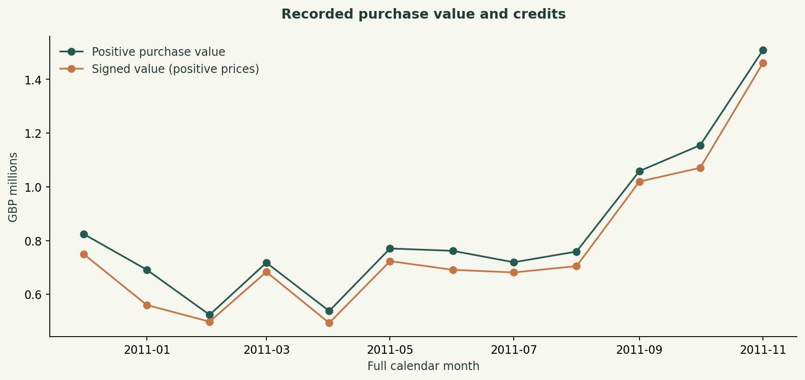

DANIEL UMEADI / SQL + PYTHON
Retail retention and repeat-purchase targeting
UCI Online Retail · December 2010-November 2011 · SQL cohorts and an out-of-time Python benchmark
Decision to support
Choose which existing customers to include in a measured repeat-purchase campaign. Establish customer coverage and retention before suggesting discounts.
Findings
The full-month window contains £10,027,892 of positive purchase value. Identified customers account for 83.7% of that value. Across cohorts with a full next month, weighted month-one repeat purchasing is 23.7%. The November model ranks a top fifth with 1.99 times the holdout purchase rate; a simple recency ranking reaches 1.43 times.
Method
DuckDB builds invoice-line, customer-order and RFM tables. Cohorts use first observed purchase and count a customer once per active month. Missing mature cells are zero-filled; future cells remain blank. Logistic regression uses log-transformed recency, frequency, monetary value and tenure from August-October snapshots. November is held out. All features precede their snapshot.
Recommended experiment
Compare model targeting with the recency rule and a randomized no-contact control. Measure incremental repeat purchases and contribution margin after promotion costs. High propensity is not evidence that a customer needs an incentive; reserve treatment decisions for the experiment.
Limits and data decisions
The dataset is historical and includes wholesalers. First observed purchase is not verified acquisition. Missing customer IDs remain in sales analysis but cannot enter retention or modeling. Identical source lines are retained because no line-level key proves duplication. Cancellation/negative lines are excluded from propensity features and reported separately in signed totals. December 2011 is partial and excluded. Purchase value includes all positive-priced invoice items and is neither profit nor audited net revenue. One seasonal holdout does not establish generalization.



Holdout model metrics
| metric | value |
|---|---|
| test_month | 2011-11 |
| train_snapshot_months | [2011-08, 2011-09, 2011-10] |
| test_customers | 3974 |
| purchase_prevalence | 0.337 |
| average_precision | 0.634 |
| roc_auc | 0.735 |
| brier | 0.186 |
| constant_train_rate_brier | 0.228 |
| top_20pct_precision | 0.673 |
| top_20pct_lift | 1.994 |
| recency_rule_top20_lift | 1.428 |
| top_group_n | 795 |